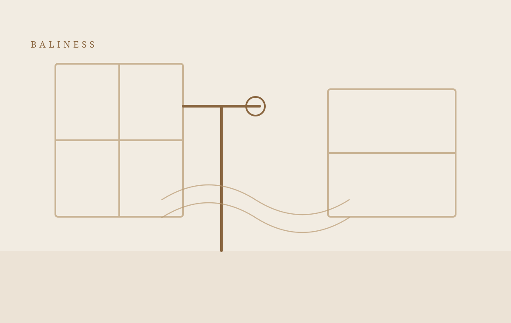

Swelling & bloating
Swelling & Bloating Care
For guests whose legs swell easily, or whose face is puffy in the morning. Swelling and bloating care is given together with the sling and high-frequency programs.
New Studio · Itaewon
Our second studio opens in Itaewon, close to Hannam, in mid-February 2027.
Swelling & Bloating Care · Body & Diet Care
발리너스 이태원점 · 2027년 2월 중순 오픈 예정
붓기·부종 관리 · 다이어트 케어
The exact address, phone number, hours and pricing are being confirmed and will be published on this page. To hear first, leave a text at the studio line or use the update form below.

Focus
Swelling and bloating care, and body & diet care, on the same sling and high-frequency base as Yongsan.
Swelling & bloating
For guests whose legs swell easily, or whose face is puffy in the morning. Swelling and bloating care is given together with the sling and high-frequency programs.
Body & diet
Body and diet care for guests who want to look after body balance alongside a diet. It is not a substitute for meals or exercise.
The new studio
이태원점은 본점과 같은 1:1 방식으로 준비하고 있습니다.
BALINESS is a one-to-one studio for sling and high-frequency body balance care. The Itaewon studio runs the same care as Yongsan: Sling Body Balance Care, High-Frequency Body Balance Care with a device licensed as a beauty device, and one-to-one sessions adjusted to your condition that day. Many guests around Itaewon come with swelling and puffiness and ask about care for it, so swelling care is part of what we prepare here.
Guests here are expected to be about half international and half Korean, so information and booking are provided in both English and Korean. Pricing, session length and device models will be confirmed before opening; until then, the items marked as being prepared on this page are genuinely undecided, and we will not fill them with guesses.
If you would like to try the care before the new studio opens, the Yongsan studio is running now and is a short trip from Itaewon.
Programs
The service line-up is the same as the main studio. Pricing, session length and device models are being confirmed. For guests who come with swelling or puffiness, swelling care is part of the session.
Sling-wave care
A one-to-one sling bodywork program in which waves are delivered with the feet. The format and intensity are set in consultation and adjusted to your condition that day.
Using a licensed beauty device
A care session using a high-frequency device licensed as a beauty device. It is not a medical procedure; the area and duration are set in consultation on the day.
A BALINESS program
details to come
One of the programs run alongside sling and high-frequency care. Its format and who it suits are explained in consultation. (Detail page in preparation.)
Adjusted to your body that day
Every program runs one-to-one. Even within the same program, intensity and sequence are adjusted to your condition that day.
Before opening
Only the opening window is fixed. The rest is still being arranged.
| Focus | Swelling & Bloating Care · Body & Diet Care |
|---|---|
| Opening | Opening mid-February 2027 · exact date to be announced |
| Location | Itaewon · Hannam area — exact address to be announced |
| Phone | To be announced. Until then, the main studio line: 010-8054-1122 |
| Hours | To be announced |
| Pricing | To be announced |
| Programs | Same line-up as Yongsan — Sling Body Balance Care, High-Frequency Body Balance Care, T.S.W · one-to-one (pricing, duration and device model to be announced) |
Opening updates
The sign-up form is being prepared. Until it is connected, text the studio line and we will send opening news in order.
Phone 010-8054-1122 · Email jpstudio5252@naver.com
We are preparing for mid-February 2027. The exact date will be announced on this page and through the studio line.
Not yet. To receive opening news first, text the studio line at 010-8054-1122 and we will send the schedule as it is confirmed.
Yes — this page is in English, and booking and visiting information for the new studio will be published in both English and Korean.
If you would like to experience the care before the new studio opens, you are welcome in Yongsan.
2F, Hyosung Harrington Square Bldg. C, 17 Seobinggo-ro, Yongsan-gu, Seoul · 010-8054-1122 · Hours being confirmed